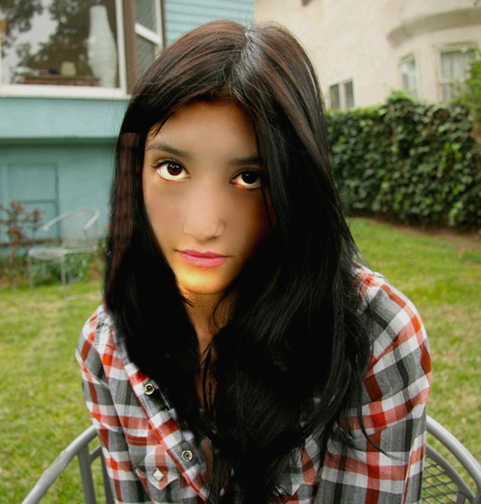
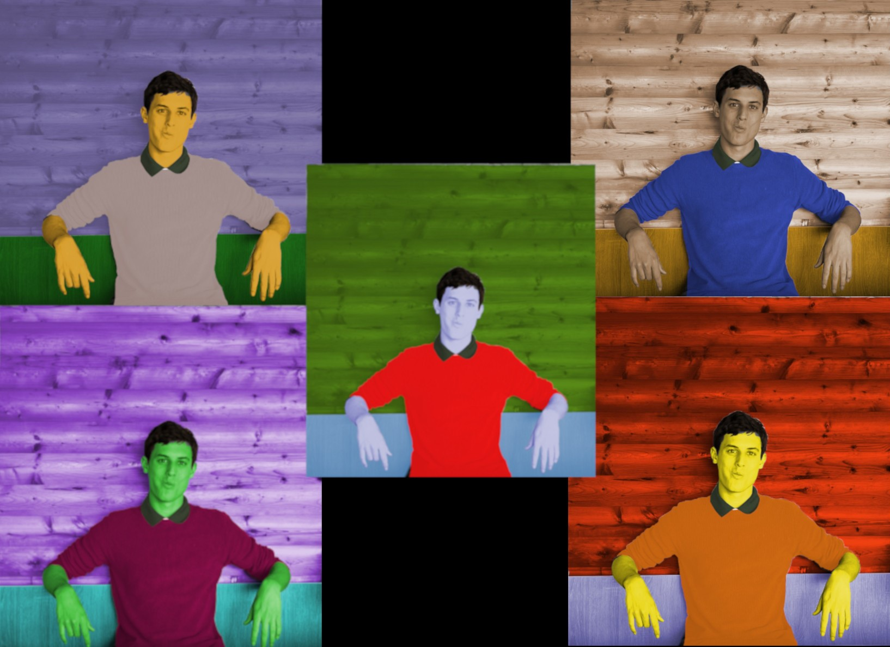
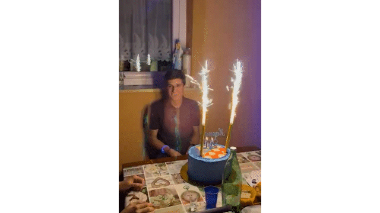
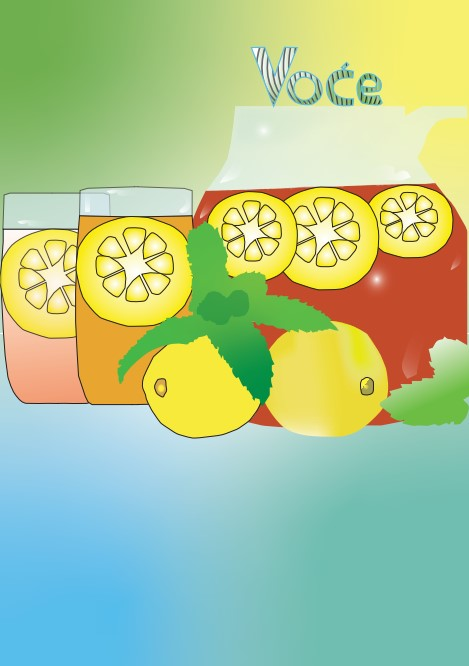
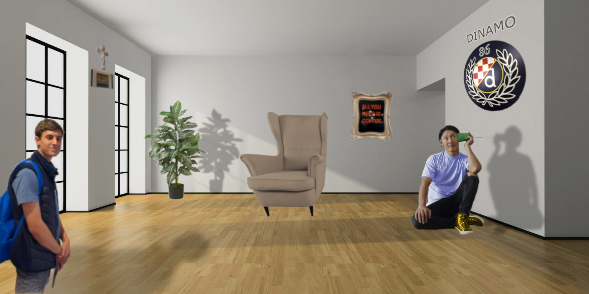

U ovoj vjezbi smo koristili photoshop kako bi korigirali oštećenja slike i da korigiramo ostale sitne detalje poput brisanja prištića, korigiranje kose...
U ovoj vjezbi smo koristili taokđer photoshop te u njemu smo na početnoj slici mijenjali tonove boje.
U ovoj vjezbi smo koristili isto kao i u prošle dvije vježbe photoshop kako bi na jednu fotografiju ubacili više detalja iz drugih slika.

U ovoj vjezbi smo koristili Adobe Premier za izradu gif iz slika.
Ovo je bio moj prvi projektni zadatak u kojem je cilj bio napraviti svoj font, koristiti znanje i vještine stečene kroz prve 4 vježbe
Ovo je bio moj drugi projektni zadatak u kojem je cilj bio Kreirati sliku u Adobe Photoshopu ili GIMPu kao kompoziciju više fotografija koristeći tehnike retuširanja, fotomontaže i koloriranja
